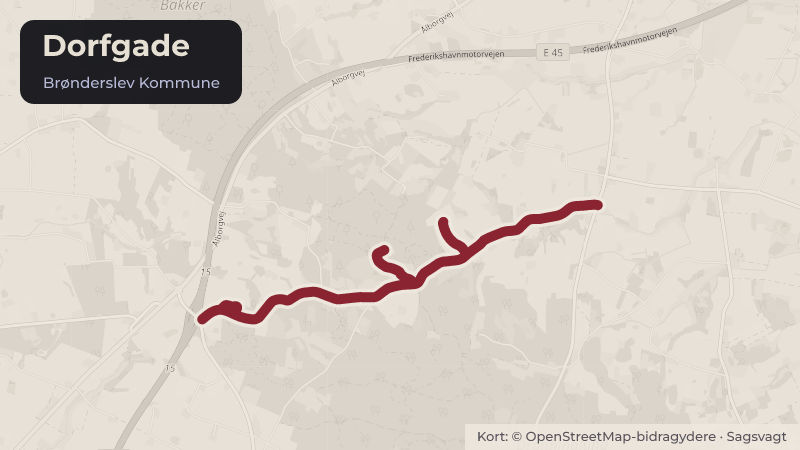

På dagsordenen 30. november, Teknisk Udvalg, Brønderslev
Trafiksikkerhedsmæssige tiltag på Dorfgade
Trafik og cyklerKlima og grøntKultur og fritid

Kort fortalt
- Hvem
- Teknisk Udvalg, Brønderslev Kommune
- Hvornår
- Mandag 30. november 2026
- Status
- På dagsordenen. Sagen behandles på mødet.
Er noget forkert her? Skriv til os
Hvad kan du gøre?
- Skriv til politikerne
- Udvalgets møder er lukkede, men du kan skrive til medlemmerne før mødet mandag 30. november 2026. Du finder dem på bronderslev.dk.
Læs hele sagen Kommunens egen tekst
Sagsfremstilling
Teknisk Udvalg har på mødet den 14. september 2026 ønsket at få mulighederne for
hastighedsnedsættelse og eventuelt et gennemkørselsforbud for lastbiler på Dorfgade
undersøgt.
Teknik- og Miljøudvalget har den 7. september 2009 behandlet en borgerhenvendelse med
samme ønsker. Dengang blev det besluttet at etablere et gennemkørselsforbud for lastbiler på
Dorfgade fra øst mod vest.
Dorfgade er klassificeret som en fordelingsvej i åben land og vejen er skiltet med
advarselstavler A 42 "Flere sving" i begge ender.
En trafiktælling fra 2023 viser, at Dorfgade har en årsdøgntrafik på 285 køretøjer, hvoraf 61 er
lastbiler. 85%-fraktilen er på 71 km/t og gennemsnitshastigheden er 59 km/t. Der er ikke
kendskab til forhold, som indikerer, at trafikmængden eller trafikmønstret på Dorfgade har
ændret sig væsentligt siden 2023. På den baggrund vurderes trafiktællingen at kunne
anvendes som et repræsentativt grundlag for vurderingen af de aktuelle trafikforhold.
De 18 talte lastbiler, der passerer forbudsskiltet på Dorfgade ved Dorf Mølle, må forventes at
have et ærinde inde i området, mens de resterende 43 lastbiler, der kommer fra Øster
Thorupvej ved motorvejsafkørslen, kan have ærinde- eller gennemgående kørsel.
På Dorfgade er der ikke sket ulykker på den 5 km lange strækning i de seneste 10 år.
I kommunens Cykelstiplan - Prioritering af cykelstier i det åbne land, er Dorfgade ikke
prioriteret til fremtidig cykelsti.
Det er ikke forventeligt, at Politiet vil godkende en hastighedsnedsættelse til 60 km/t, når nu
trafikmålingen viser, at der i forvejen bliver kørt mindre end de tilladte 80 km/t samt at der ikke
er sket ulykker på strækningen.
Fagforvaltningen forventer ikke at en ny trafikmåling giver et andet billede end den seneste
måling i 2023.
Fagforvaltningen vurderer samlet, at der ikke er behov for yderligere trafiksikkerhedsmæssige
tiltag på Dorfgade. Vurderingen bygger på vejens klassificering og udformning, den lave
årsdøgntrafik med få lastbiler, den målte lave hastighed samt, at der ikke er registreret ulykker
på strækningen. Hertil kommer, at den eksisterende skiltning om flere sving og lastbilforbud
understøtter et vejforløb, der ikke indbyder til høj hastighed.
Personalemæssige konsekvenser
Ingen.
Indstilling
Fagforvaltningen for Klima, Teknik og Kultur indstiller, at Teknisk Udvalg beslutter at
der ikke foretages yderligere trafiksikkerhedsmæssige tiltag på Dorfgade.
Kilde: Brønderslev Kommune, Teknisk Udvalg, dagsorden fra mødet mandag 30. november 2026, punkt 8. Læs den originale sag hos kommunen.
Steder i sagen: Dorfgade